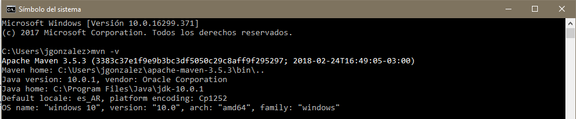
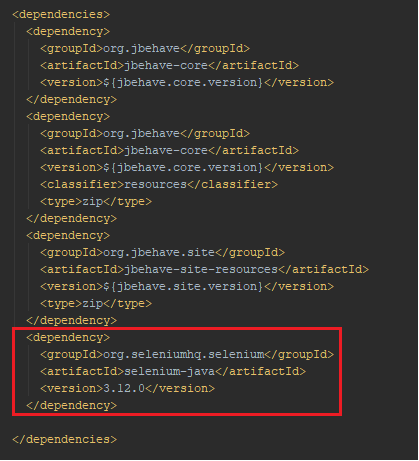

Introducción
La automatización de pruebas consiste en el uso de software especial (casi siempre separado del software que se prueba) para controlar la ejecución de pruebas y la comparación entre los resultados obtenidos y los resultados esperados. La automatización de pruebas permite incluir pruebas repetitivas y necesarias dentro de un proceso formal de pruebas ya existente o bien adicionar pruebas cuya ejecución manual resultaría difícil.
Las herramientas de pruebas a utilizar serán del lenguaje de programación Java.
Implementación de pruebas en Java
Para desarrollar pruebas automáticas en Java, se necesitará de las siguientes herramientas:
- Apache Maven, un gestor de proyectos.
- Java SE Development Kit (JDK).
- IDE IntelliJ IDEA.
- Selenium (este permite a través de un WebDriver controlar el comportamiento de una página web).
- JBehave, el framework para BDD (Behaviour Driven Development, o Desarrollo Orientado al Comportamiento).
Apache Maven
¿Qué es Maven?
Maven es una herramienta de software para le gestión y construcción de proyectos Java, tiene un modelo de configuración de construcción más simple, basado en un formato XML. Maven utiliza un Proyect Object Model (POM), para describir el proyecto de software a construir, sus dependencias de otros módulos y componentes externos, y el orden de construcción de los elementos. Viene con objetivos predefinidos para realizar ciertas tareas claramente definidas, como la compilación del código y su empaquetado.
Maven y POM
POM (Proyect Object Model) es la unidad fundamental de trabajo de Maven. Es un archivo XML que contiene información sobre el proyecto y los detalles de configuración usados por Maven para construir el proyecto.
Las librerías disponibles se encuentran en el repositorio de Maven, donde se proporciona el tag dependency que se debe agregar al archivo pom, para poder usar esas librerias en un proyecto.
Arquetipos en Maven
Un arquetipo es definido como un modelo o patrón original a partir del cual se hacen todas las demás cosas del mismo tipo. Estos generan un sistema que proporciona medios consistentes para generar proyectos Maven.
El uso de arquetipos proporciona al desarrollador una manera eficiente de implementar las prácticas utilizadas por su proyecto u organización.
Para crear un proyecto basado en un arquetipo, se debe ejecutar el comando mvn archetype:generate.
Instalación de Maven
-
Descargar la última versión de Maven desde este link.
-
Descomprimir en cualquier directorio.
-
Añadir el directorio donde se encuentra la carpeta bin de Maven a las variables de entorno del sistema operativo.
- En windows: abriendo las propiedades del sistema (
WinKey + Pause) -> Configuración avanzada del sistema -> Variables de entorno, y editar la variable de usuario “Path”, agregando el directorio donde se encuentra la carpeta bin de Maven. - En Linux: ejecutar en una terminal el comando
export PATH=/opt/apache-maven-3.5.3/bin:$PATH.
- En windows: abriendo las propiedades del sistema (
-
Para validar que Maven funciona ejecutar el comando
mvn -v.
Para más información sobre Maven ingresar a su página oficial.
IntelliJ IDEA
¿Qué es IntelliJ IDEA?
IntelliJ IDEA es un entorno de desarrollo integrado(IDE) para el desarrollo de programas informáticos. Es desarrollado por JetBrains (anteriormente conocido como IntelliJ), y está disponible en dos ediciones: edición para la comunidad y edición comercial. IntelliJ IDEA no está basada en Eclipse como MyEclipse u Oracle Enterprise Pack para Eclipse.
Instalación de IntelliJ IDEA y JDK
- IDE IntelliJ IDEA.
- JDK. (Luego de instalar el JDK, hay que añadir la variable de entorno ‘JAVA_HOME’ cuyo directorio va a ser la carpeta donde se instaló el JDK).
Selenium Web Driver
¿Qué es Selenium Web Driver?
Selenium es un conjunto de diferentes herramientas de software, cada una con una función determinada, con la función de soportar las pruebas automatizadas.
Selenium Web Driver se implementa a través de un controlador del navegador (específico para cada navegador), que envía los comandos y trae los resultados de regreso.
Web Drivers de los navegadores más comunes:
- Web Driver de Mozilla Firefox.
- Web Driver de Google Chrome.
- Web Driver de Internet Explorer.
Instalación de Selenium Web Driver
Para agregar Selenium a un proyecto, sólo se debe agregar la dependencia siguiente en el archivo pom.xml.
<dependency> <groupId>org.seleniumhq.selenium</groupId> <artifactId>selenium-server</artifactId> <version>3.12.0</version> </dependency>

Nota: verificar en la página oficial de Selenium la última versión disponible.
JBehave
¿Qué es JBehave?
JBehave es un framework para implementar BDD (Behaviour Driven Development, Desarrollo Orientado al Comportamiento). BDD es una evolución del TDD (Test Driven Development, Desarrollo Orientado a Pruebas), y fue desarrollado para hacer que estas prácticas sean más accesibles e intuitivas para los novatos y los expertos también.
Para más información acceder a la página oficial de JBehave.
Instalación de JBehave
En la siguiente sección, se describirá como implementar esta herramienta para desarrollar una prueba automatizada.
Desarrollo de una prueba automatizada
Para comenzar a desarrollar pruebas en Java, se utilizarán las herramientas comentadas anteriormente.
Lo primero que se debe hacer es generar el proyecto Maven, en base al arquetipo proporcionado por JBehave, para tener la estructura o ‘plantilla’ básica del programa. Para esto se debe:
-
Abrir una terminal y ubicarse en el directorio donde se quiere crear el proyecto, con el comando
cd. -
Ejecutar el siguiente comando:
mvn archetype:generate \ -Dfilter=org.jbehave:jbehave \ -DartifactId="MyArtifact" \ -DgroupId="MyGroup" \ -Dpackage="MyGroup.MyArtifact" \ -Dversion=1.0 \ -DinteractiveMode=true
- -Dfilter=org.jbehave:jbehave indica el repositorio de Maven donde se encuentra el arquetipo.
- -DartifactId=“MyArtifact”, se debe asignar un nombre al artefacto, sin las comillas.
- -DgroupId=“MyGroup”, se debe asignar un nombre al grupo, sin comillas.
- -Dpackage=“MyGroup.MyArtifact”, se asigna el paquete donde estará el artefacto, sin comillas.
- -Dversion=1.0, indica la versión del proyecto que se va a generar.
- -DinteractiveMode=true, activa el modo interactivo en la generación del proyecto.
Cuando se está creando el proyecto en modo interactivo, se muestran las siguientes opciones.
Seleccionaremos para este proyecto la opción 5, para crear un arquetipo simple.
Luego se debe seleccionar la versión de JBehave.
Seleccionaremos la última versión (85 hasta el momento).
Ejecutado esto, ya se encuentra creado el proyecto.
-
Cambiar el directorio a donde se encuentra el archivo pom.xml.
-
Ejecutar el comando
mvn install. Nota: si el comando se ejecuta con errores, acceder al código de “MyStories.java” (que en este caso se encuentra en el directoriotesting/src/main/java/com/proyects/testing/MyStories.java), y eliminar el siguiente parámetro que es el que genera el error.
Ahora ya se generaron todos los archivos y carpetas del proyecto en base al arquetipo de JBehave.
-
Abrir el proyecto desde IntelliJ IDEA.
Apache Log4j 2
¿Qué es Apache Log4j?
Log4j es una biblioteca open source desarrollada en Java por la Apache Software Foundation que permite a los desarrolladores de software escribir mensajes de registro, cuyo propósito es dejar constancia de una determinada transacción en tiempo de ejecución. Log4j permite filtrar los mensajes en función de su importancia. La configuración de salida y granularidad de los mensajes es realizada en tiempo de ejecución mediante el uso de archivos de configuración externos.
El uso de esta librería es una buena práctica implementada por los desarrolladores para seguir la traza de errores.
Implementación de Log4j al proyecto
Para importar la librería se debe agregar la siguiente dependencia al archivo pom.xml.
<!-- https://mvnrepository.com/artifact/org.slf4j/slf4j-api --> <dependency> <groupId>org.slf4j</groupId> <artifactId>slf4j-api</artifactId> <version>1.7.25</version> </dependency>
Luego, se debe crear el objeto Logger que permitirá mostrar los mensajes de registro por consola. mientras se realizan las pruebas. En este caso, el Logger se creará en la clase donde definimos los steps de la prueba, “CrudSteps.java”.
private static final Logger LOGGER = LoggerFactory.getLogger(CrudSteps.class);
@BeforeStories
protected final void beforeStories() {
LOGGER.info(MessageFormat.format("{0} <<<<<< @BeforeStories", getClass().getCanonicalName())); Hecho esto, solo falta ejecutar el test definiendo un nivel de logging. Hay distintos niveles que se pueden seleccionar dependiendo de los tipos de registros que se quieren obtener. Para ver detalladamente cada nivel acceder a este tutorial de log4j.
Ejecutando el siguiente comando en el directorio donde se encuentra el archivo pom.xml, se ejecuta el test con el nivel de logging “info”.
mvn clean install -Dorg.slf4j.simpleLogger.defaultLogLevel=info
Filtrado de stories
Cuando en un proyecto existen muchas stories para probar, se puede seleccionar un subconjunto de ellas teniendo en cuenta condiciones determinadas. Por ejemplo, podría querer filtrar las stories con un id determinado asi como con cualquier otro meta-dato que posea la story.
Implementación del filtrado en el proyecto
Para agregar esta funcionalidad al proyecto, se debe agregar el siguiente código al archivo “MyStories.java”.
@Override
protected List<String> storyPaths() {
final URL searchIn;
final String include, exclude, storyFilterProperties;
storyFilterProperties = System.getProperty("storyFilter", "*.story");
searchIn = codeLocationFromClass(this.getClass());
include = "**/" + storyFilterProperties;
exclude = "**/excluded*.story";
return new StoryFinder().findPaths(searchIn, include, exclude);
}
@Override
public Embedder configuredEmbedder() {
final Embedder embedder;
embedder = super.configuredEmbedder();
String metaFilter = System.getProperty("meta.filter");
if (metaFilter != null) {
embedder.useMetaFilters(Arrays.asList(metaFilter));
}
return embedder;
}El método storyPaths() permite filtrar stories en base a la ubicación de las mismas, para utilizarlo se debe definir un valor para el parámetro -DstoryFilter. Por otro lado, el método configuredEmbedder() permite filtrar las stories según algún meta-dato determinado de las mismas, para utilizarlo se debe definir un valor para el parámetro -Dmeta.filter.
Ejemplos de utilización de filtros:
- mvn clean install -Dmeta.filter=native
- mvn clean install -Dmeta.filter="+storyId 1"
- mvn clean install -Dmeta.filter="+storyId 1 +user=user_name"
- mvn clean install -DstoryFilter=native.story
- mvn clean install -DstoryFilter=native.story -Dmeta.filter=native
- mvn clean install -DstoryFilter=native.story -Dmeta.filter="+storyId aUS9999"
Nota: los metadatos se definen al principio de una story, por ejemplo:
Para más información de cómo filtrar stories, acceder a la página de JBehave.
Crear repositorio en BitBucket
¿Qué es BitBucket?
BitBucket es un servicio de alojamiento basado en web, para los proyectos que utilizan el sistema de control de versiones Mercurial y Git. BitBucket ofrece planes comerciales y gratuitos. Se ofrece cuentas gratuitas con un número limitado de repositorios privados (que puede tener hasta cinco usuarios en el caso de cuentas gratuitas), los repositorios privados no se muestran en las páginas de perfil. Este servicio está escrito en Python.
Es similar a GitHub, que utiliza Git.
Creación de un repositorio
- Crearse una cuenta en la página web de BitBucket.
- Una vez logeado, seleccionar la opción Create -> Repository
Uso de SSH-keygen para acceder al repositorio
¿Qué es SSH?
SSH (Secure Shell o Intérprete de órdenes seguro) es el nombre de un protocolo y del programa que lo implementa, y sirve para acceder a servidores privados a través de una puerta trasera (también llamada backdoor). Permite manejar por completo el servidor mediante un intérprete de comandos, y también puede redirigir el tráfico de X (Sistema de Ventanas X) para poder ejecutar programas gráficos si tenemos ejecutando un Servidor X (en sistemas Unix y Windows). Se le asignó el puerto TCP 22.
Además de la conexión a otros dispositivos, SSH nos permite copiar datos de forma segura (tanto archivos sueltos como simular sesiones FTP cifradas), gestionar claves RSA para no escribir claves al conectar a los dispositivos y pasar los datos de cualquier otra aplicación por un canal seguro tunelizado mediante SSH.
La ventaja de utilizar el protocolo SSH para gestionar el repositorio en vez de usar el protocolo HTTPS es que, SSH permite establecer una conexión segura al repositorio, sin necesidad de ingresar el usuario y la contraseña cada vez que se necesite realizar cambios en el repositorio.
Instalación de SSH en Windows
Para verificar si se encuentra instalado el protocolo, ejecutar el comando ssh en una consola. Si la consola no encuentra el comando, hay que instalar el protocolo siguiendo los siguientes pasos:
-
Entrar al proyecto de GitHub de OpenSSH para Windows y descargar “OpenSSH-Win32.zip” o “OpenSSH-Win64.zip” dependiendo de la arquitectura del procesador.
-
Desbloquear el zip descargado, entrando a propiedades y seleccionando la opción “Desbloquear”.
-
Descomprimir el zip en cualquier directorio.
-
Agregar la ruta del SSH al Path del SO.
-
Verificar la correcta instalación del SSH abriendo una consola y ejecutando el comando
ssh.
Crear clave RSA con ssh-keygen
Utilizando el comando ssh-keygen se crean claves RSA y DSA para la autenticación de clave pública. Genera un par de claves RSA de 2048 bits y solicita un nombre de clave y una frase de paso para proteger la clave privada. La ubicación de la clave se muestra cuando se completa la generación de claves.
-
Configurar el usuario de git ejecutando los siguientes comandos:
git config --global user.email \"Email registrado en BitBucket"\git config --global user.name \Nombre de usuario\ -
Ejecutar el comando
ssh-keygen.
-
Abrir el archivo que contiene la clave generada y copiarla al portapapeles para después agregarla al repositorio.
-
Agregar la clave al repositorio en BitBucket, seleccionando el repositorio y entrando a “Settings -> Access Keys -> Add Key”.
-
Pegar la clave y agregarla al repositorio.
Realizado esto, ya está configurada la clave que va a permitir acceder al repositorio desde una consola sin necesidad de escribir usuario y contraseña.
Para poder gestionar el repositorio desde consola, se debe instalar la herramienta Git. Para ver todos los comandos disponibles acceder a la documentación oficial.
Ejecutando el comando git clone podemos clonar el repositorio en cualquier directorio. Se debe acceder al repositorio a copiar desde la página de BitBucket y seleccionar la opción “Clone -> SSH”.